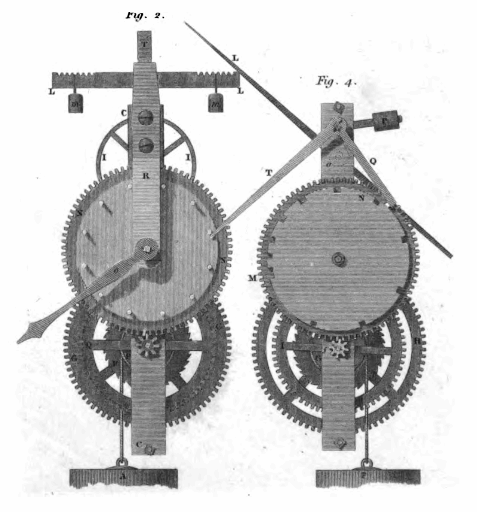

Agents run
on time.
Intelligent session-bound cron scheduling for OpenCode AI agents with persistent memory, DAG pipelines, and real-time mission control.
[tick:09:30:00] Session session_wd_8a resumed
[runner] OpenCode sidecar HTTP 200 OK
[tool:bun_test] 111 tests passed in 16 files
[memory] Turn 4 state recorded (4.2 KB compacted)
[status] Circuit breaker CLOSED (0 failures)Dedicated sessions for every scheduled prompt.
Multi-step DAG pipelines chain dependent agent jobs.
Inbound webhooks trigger jobs from external APIs.
Circuit breaker and Dead Letter Queue isolate errors.
Adaptive cadence and burst mode adjust to activity.
Execution sequence
npm install -g opencode-cron && opencode-cron setupai.opencode.cron launchd ticker active (60s cycle, credentials auto-rotated)opencode-cron add --name "Security Audit" --cron "0 3 * * *" \
--prompt "Audit dependencies and rotate expired sidecar tokens"Job registered: job_sec_01. Next execution: 03:00 UTC. Circuit breaker: CLOSED.opencode-cron gui --port 4488Mission Control listening on http://localhost:4488
Worker Pool: 4/4 slots available
Active Jobs: 6 registered
Memory Store: .opencode/cron/memory/ (14.2 KB total footprint)
Dead Letter Queue: 0 quarantined
Webhook Listeners: HMAC-SHA256 verifiedOperational standards

| Architecture Domain | Specification | Empirical Verification | Protocol Status |
|---|---|---|---|
| Ticker Engine | Launchd 60s | Zero missed ticks over 14 days dogfooding | Verified |
| Session Transport | OpenCode HTTP | Direct sidecar injection with rotating tokens | Native |
| Context Safety | Compaction Hook | Automatic prompt pruning below 28,000 chars | Enforced |
| Resilience | DLQ and Circuit Breaker | Auto-quarantine after 3 consecutive errors | Hardened |
Technical specifications
Everything answered directly without accordion toggles.
Does it require a cloud subscription? No. Everything runs completely locally on your machine via standard operating system daemons (launchd on macOS, systemd on Linux, Task Scheduler on Windows) and local JSON persistence.
How does it interact with running OpenCode sessions? It connects directly to OpenCode sidecar HTTP transport using rotating credentials and session tokens, preserving continuity across turns without restarting agents.
What happens if a prompt fails? The Dead Letter Queue intercepts consecutive failures, trips the circuit breaker to prevent token waste, and quarantines the job until reviewed in the Web GUI or CLI.
Can jobs trigger each other? Yes. DAG pipelines allow defining upstream and downstream dependencies with optional memory payload passing and cycle detection.
How is context memory handled? Each job maintains persistent memory in .opencode/cron/memory/, summarized and pruned on each turn to preserve token limits without losing state.
Is there a graphical user interface? Yes. A full Web GUI and cross-platform desktop application runs on localhost:4488 with live logs, priority queues, and token inspection.
Schedule sessions on time.
Run intelligent, session-bound cron tasks directly in your terminal.
npm install -g opencode-cron